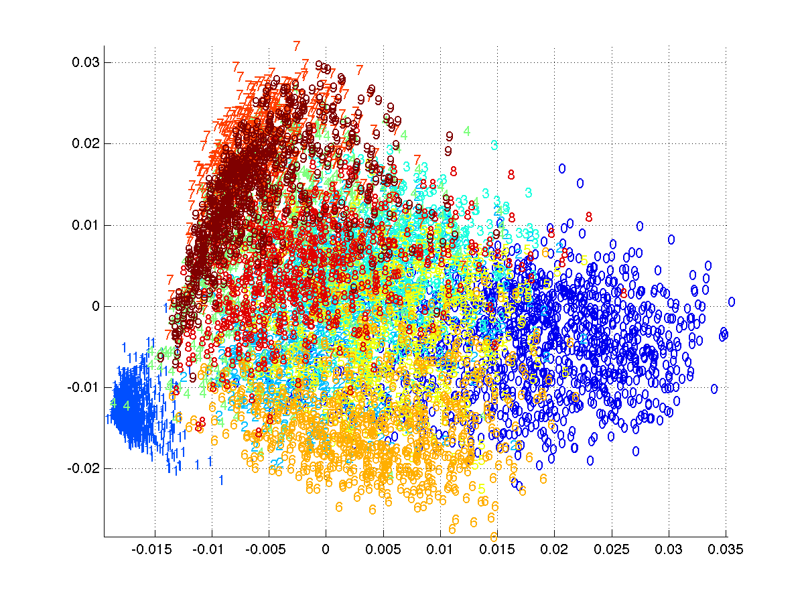
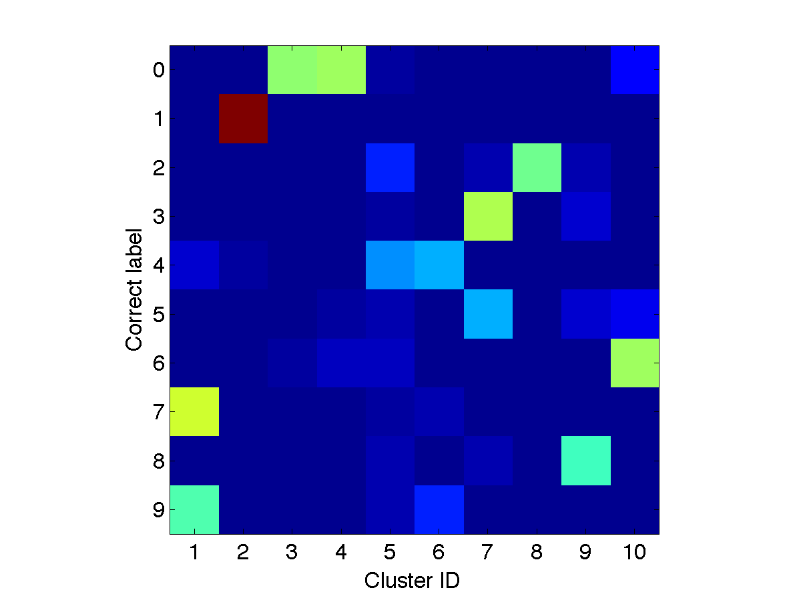
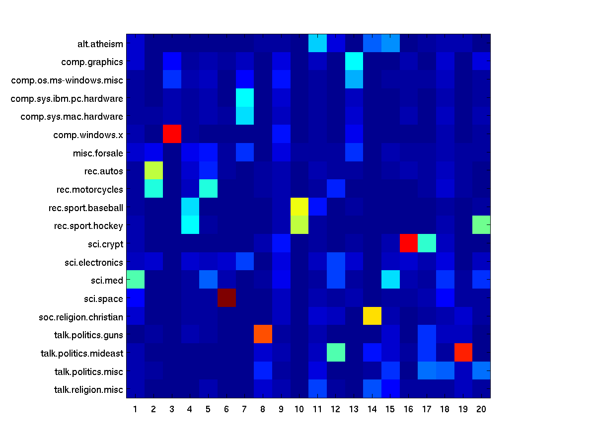

PCA, K-means, and pLSA (数理情報工学演習第二A)
Hand out and assignments. Assignments are due
Wednesday, July 17.
Principal Component Analysis
United States Postal Service (USPS) Data
Load the data
data=importdata('data/elem/usps/zip.train');
Y=data(:,1);
X=data(:,2:end)';
Visualize some of the training examples
for ii=1:10
subplot(1,10,ii); imagesc(reshape(X(:,ii),[16,16])'); colormap gray; title(int2str(Y(ii)));
end
Subtract mean image
xm=mean(X,2);
Xb = bsxfun(@minus, X, xm);
Compute PCA
[U,S,V]=svd(Xb);
Use Mark Tygert's
pca.m if this takes too much time.
[U,Lmd,V]=pca(Xb, 50, 10); % obtain the 50 largest singular values/vectors
Visualize the singular-value spectrum
figure, plot(diag(S),'-x')
Question: Given singular-values $s_1,s_2,...s_p$ (p is the number of dimensions 256), what fraction of the total variance is explained if we truncate the SVD at the $k$th singular-values/vectors?
Visualize the principal components
for ii=1:50
subplot(5,10,ii); imagesc(reshape(U(:,ii),[16,16])'); colormap gray;
end
Visualize the top two-dimensional projection
figure;
colormap jet; col=colormap;
for cc=1:10
ix=find(Y==(cc-1));
text(V(ix,1), V(ix,2),int2str(cc-1), 'color', col(ceil(size(col,1)*cc/10),:));
end
xlim([min(V(:,1)), max(V(:,1))]); ylim([min(V(:,2)),max(V(:,2))]);

Advanced: Face images
How to read the data
I=imread('att_faces/s1/1.pgm');
k-means Clustering
Use the same USPS data set.
Implement k-means clustering
- Download the skeleton: kmeans.m.
- Implement the "cluster center update step".
- Implement the "cluster assignment update step".
Run k-means
With the number of clusters 10:
[M,Z] = kmeans(X, 10);
Visualize the cluster centers
for ii=1:10
subplot(1,10,ii); imagesc(reshape(M(:,ii),[16,16])'); colormap gray;
end
Check whether the cluster assignments are consistent with the class labels
Download a function
loss_confusionMatrix.m to compute the confusion matrix and
[Yout, JJ, NN]=find(Z);
C=loss_confusionMatrix(Y, Yout)
figure, imagesc(C); set(gca,'yticklabel',0:9);

Probabilistic Latent Semantic Indexing (pLSA)
20 Newsgroups data set
Read the data
Read the vocabulary
voc=importdata('vocabulary.txt');
D=length(voc);
Read the labels and data
Y=load('matlab/train.label');
N=length(Y);
load('matlab/train.data');
X=sparse(train(:,2),train(:,1),train(:,3),D,N);
Remove stop words
Download
findsubset.m
stop=importdata('stopwords.txt');
I=findsubset(voc, stop); I=I(~isnan(I));
X(I,:)=[];
voc(I)=[];
Implement pLSA
- Download the skeleton plsa_em.m.
- Implement the E-step.
- Implement the M-step.
Run pLSA
With the number of topics 20
K=20;
[Phi,Pi,nlogP]=plsa_em(X,K,200);
Assess the coherence between the true class labels
top20=cell(20,K);
for ii=1:K
[ss,ix]=sort(-Phi(:,ii)); top20(:,ii)=voc(ix(1:20));
end
Assess the coherence between the true class labels
Calculate the probability of labels given a topic P(y|c)（y: class label, c: topic)
Pyc=zeros(20,K);
for cc=1:20
Pyc(cc,:)=sum(Pi(:,Y==cc)');
end
Pyc=bsxfun(@rdivide, Pyc, sum(Pyc));
figure, imagesc(Pyc);
tmp=importdata('matlab/train.map');
set(gca,'ytick',1:20,'yticklabel',tmp.textdata)

References